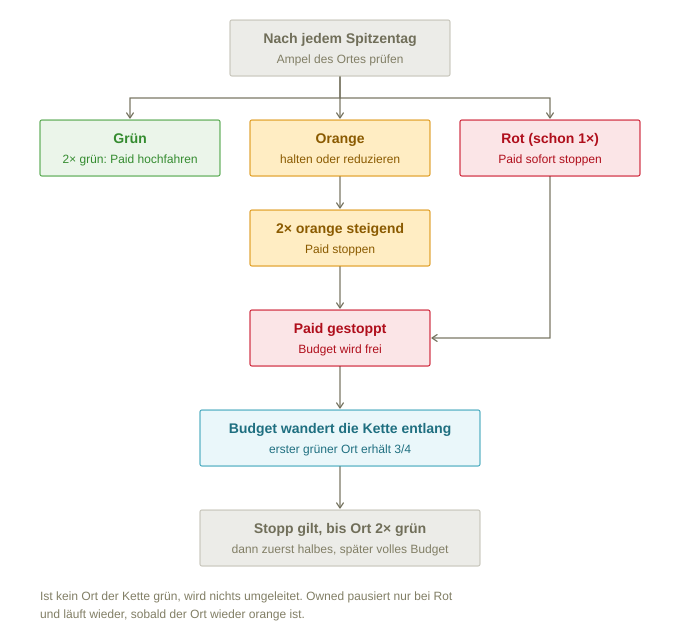

Grundlagen
Was zeigt das Dashboard?
Wie voll beliebte Ausflugsziele in Graubünden an Spitzentagen sind, welche Kampagnen dafür laufen, reduziert oder gestoppt wurden, und wohin das Werbebudget umgeleitet wird. Ziel ist, Gäste von überlasteten Orten zu gleichwertigen Alternativen zu lenken, statt die Überlastung mit Werbung noch zu verstärken.
Der Prototyp arbeitet mit erfundenen Beispieldaten für den Sommer 2026: 11 Orte in den Themen Bergsee, Schlucht und Wellness.
Was ist ein Spitzentag?
Ein Wochenende oder Feiertag mit schönem Wetter. Nur an diesen Tagen wird bewertet, denn an gewöhnlichen Tagen sagt die Auslastung nichts über eine Überlastung aus. Im Zeitregler stehen deshalb nur Spitzentage.
Wie wird die Ampel berechnet?
Die Auslastung ist der Messwert geteilt durch die Kapazität des Ortes, etwa 274 von 380 Parkplätzen = 72 %. Jeder Ort hat zwei Schwellen:
- grün unter der Orange-Schwelle (meist 60 %)
- orange ab der Orange-Schwelle
- rot ab der Rot-Schwelle (85 %, bei Thermen 90 %)
Fehlen Daten oder ist der Wert unplausibel, erscheint der Ort grau, nie grün. Was dann passiert, steht unter Was passiert bei grau?
Warum ist orange das Ziel?
Orange heisst: ausgelastet, aber nicht überlastet. Grün bedeutet ungenutztes Potenzial, rot bedeutet Stau, volle Parkplätze und unzufriedene Gäste. Die Steuerung versucht, möglichst viele Orte in orange zu halten.
Steuerung
Wann wird Paid gestoppt, reduziert oder hochgefahren?
Die Regeln werden nach jedem Spitzentag angewendet. Grundsatz: schnell bremsen, langsam Gas geben.
| Lage an den letzten Spitzentagen | Paid (bezahlte Werbung) | Owned (eigene Kanäle) |
|---|---|---|
| grün | halten | aktiv |
| 2× grün hintereinander | hochfahren, zurück aufs Saisonstart-Budget (nie darüber) | aktiv |
| orange | halten oder reduzieren | aktiv |
| 2× orange mit steigender Tendenz | stoppen | aktiv |
| 1× rot | sofort stoppen | pausieren |
| nach rot wieder orange | gestoppt lassen | wieder aktiv |
| nach Stopp 2× grün | mit halbem Budget wieder aufnehmen | aktiv |
| danach grün | volles Budget zurück | aktiv |
| grau (keine gültigen Daten) | letzten Entscheid halten | unverändert |
Wann und wie lange wird das Budget gestoppt bzw. weitergegeben?

- Wann: 1× rot stoppt sofort, bei orange erst nach zwei Spitzentagen mit steigender Tendenz.
- Wohin: zum ersten grünen Ort der Substitutionskette. Er erhält drei Viertel davon (siehe Warum erhält das Substitut nur drei Viertel?).
- Wie lange: solange Paid am Ausgangsort gestoppt ist. Wieder aufgenommen wird erst nach 2× grün hintereinander; ein einzelner ruhiger Tag reicht nicht.
- Zurück: in zwei Stufen, zuerst das halbe, dann das volle Budget (siehe Wie kommt das Budget zurück?).
Was ist eine Substitutionskette?
Jeder Ort kennt einen gleichwertigen Ersatzort zum gleichen Thema, sein Substitut. Dieser hat wieder ein Substitut, und so weiter. So entstehen Ketten von bekannten, schnell vollen Orten zu weniger bekannten:
- Heidsee → Lai da Marmorera → Lag da Breil
- Lai da Palpuogna → Lago di Poschiavo → Lago Bianco (Berninapass)
- Therme Vals → Mineralbad Andeer → Bogn Engiadina
- Viamala-Schlucht → Rofflaschlucht
Wohin fliesst das Budget bei einem Stopp?
Es wandert die Kette entlang bis zum ersten Ort, der grün ist, notfalls bis zum letzten Ort der Kette. Orte unterwegs, die selbst orange oder rot sind, geben weiter.
Beispiel 9. August: Heidsee ist gestoppt. Marmorera ist selbst orange und gibt weiter, Lag da Breil ist grün und erhält 75 % des Heidsee-Budgets, also CHF 1’130 statt 1’500 pro Woche. Wäre auch Breil voll, gäbe es kein weiteres Substitut, und das Budget würde ruhen.
Das Budget bleibt beim Empfänger, bis dieser selbst gestoppt wird; dann wandert es weiter, zusammen mit seinem eigenen. Für Empfänger gelten dieselben Regeln wie für alle Orte: Wird ein Empfänger orange, halbiert sich sein Paid.
Was passiert bei grau?
Grau heisst: Für diesen Ort und Tag gibt es keinen gültigen Messwert. Entweder fehlen die Daten, oder der Wert ist unplausibel, etwa null an einem Spitzentag oder mehr als die Kapazität. Ein Datenloch ist kein Zeichen für Überlastung, aber auch keines für freie Kapazität. Deshalb gilt:
- Letzten Entscheid halten: Paid und Owned bleiben, wie sie waren. Gestoppt bleibt gestoppt, hochgefahren wird nicht.
- Grau unterbricht die Zählung: „2× grün hintereinander“ und „2× orange steigend“ beginnen nach einem grauen Tag von vorn. So löst ein Datenloch weder einen Neustart noch einen Stopp aus.
- Kein Budget an graue Orte: Als Substitut wird ein grauer Ort nie wie grün behandelt. Er gibt das Budget an den nächsten Ort der Kette weiter.
- Ab 2× grau hintereinander: Alarm an die Destination und an Graubünden Ferien, mit dem Grund, zum Beispiel „keine Daten“ oder „unplausibel: 0 Fahrzeuge“. Die Werbung wird dabei nicht automatisch gestoppt.
Im Dashboard ist der Ort grau, statt einer Zahl steht „keine Daten“ bzw. „—“, und in der Fieberkurve fehlt der Tag.
Wie kommt das Budget zurück?
In zwei Stufen, nach dem Grundsatz „schnell bremsen, langsam Gas geben“:
- Nach 2× grün: Der Ausgangsort startet mit halbem Budget (Stufe „reduziert“). Der Empfänger behält die Hälfte seines Übernahme-Betrags.
- Am nächsten grünen Spitzentag: Der Ausgangsort erhält das volle Budget zurück, der Empfänger fällt auf sein eigenes Budget zurück. Ist der Tag orange, bleibt es beim halben Budget, wie bei jedem orangen Ort.
Wird der Ausgangsort dazwischen rot, wird sofort wieder gestoppt und das Budget wandert wieder die Kette entlang.
Warum nicht auf einen Schlag? Das Risiko liegt beim Ausgangsort: Er war eben noch voll. Mit dem ganzen Budget auf einmal kippt er leicht wieder in Rot, und das Budget pendelt hin und her. Für den Empfänger ist die Rückgabe unkritisch, weil weniger Werbung an einem grünen Ort keine Überlastung auslöst.
Warum erhält das Substitut nur drei Viertel?
Substitute sind fast immer kleinere Destinationen als der Ort, den sie entlasten. Das volle Budget eines grossen Ortes würde einen kleinen Ort selbst schnell an die Grenze bringen und das Problem nur verschieben. Deshalb erhält der Empfänger standardmässig 75 % des gestoppten Budgets. Der Rest wird nicht ausgegeben.
- Bei sehr kleinen Orten kann der Anteil auf 25–50 % gesenkt werden. Im Prototyp gilt das für Lago Bianco und Rofflaschlucht (je 50 %): Die Viamala-Schlucht stoppt CHF 1’000, die Rofflaschlucht erhält CHF 500.
- Festgelegt wird der Anteil zu Beginn der Saison, pro Ort, zusammen mit Kapazität und Schwellen.
- Massgebend ist der Anteil des Ortes, der das Budget am Ende erhält. Orte, die nur weitergeben, kürzen nichts. Gibt Marmorera das Heidsee-Budget an Breil weiter, erhält Breil 75 % des ursprünglichen Heidsee-Budgets, nicht 75 % von 75 %.
- Ausgangspunkt ist das zuletzt laufende Budget, also bei einem vorher reduzierten Ort das reduzierte.
Was passiert, wenn kein Ort der Kette grün ist?
Dann wird nichts umgeleitet. Das Budget ruht, bis wieder ein Ort Kapazität hat. Das ist die Situation in der Hochsaison.
Was passiert mit den eigenen Kanälen (Owned)?
Owned (Instagram, Web, Newsletter) kostet kein Budget und läuft normalerweise weiter. Es pausiert nur bei rot und läuft wieder, sobald der Ort wieder orange ist, auch wenn Paid dann noch gestoppt ist. So hängt jede Regel an einer Ampelfarbe.
Wer trifft die Entscheide?
Die Regeln sind als Programm hinterlegt (js/regeln.js), genau so, wie sie in dieser FAQ stehen. Daraus entstehen die Entscheide; niemand trägt sie von Hand ein.
- Regelprüfung: Das Dashboard rechnet die Regeln bei jedem Laden nach und vergleicht sie mit den gespeicherten Entscheiden. Unter „Steuerungsverlauf“ steht, ob alles stimmt, oder welche Entscheide abweichen.
- Simulation: Für die Prognosetage zeigt das Dashboard, was die Regeln entscheiden würden, gekennzeichnet mit „Simulation“.
- Echtbetrieb: Derselbe Code läuft auf dem Server nach jedem Spitzentag und schreibt die Entscheide, idealerweise direkt mit Anbindung an die Werbekonten.
Dashboard lesen
Wie bediene ich Themen und Zeitregler?
Im roten Balken wählst du das Thema und mit dem Regler den Spitzentag. Unter dem Regler steht das Wetter des gewählten Ortes für jeden Spitzentag; blasse Symbole sind Prognosen. „Stand“ ist der letzte Tag mit gemessenen Werten.
Was bedeuten die vier Zahlen oben?
Die Budget-Übersicht für den gewählten Tag und das gewählte Thema:
- Paid im Einsatz: Summe aller laufenden Paid-Kampagnen pro Woche.
- davon bei Substituten: der Teil, der von gestoppten Orten umgeleitet wurde.
- ruht: Budget gestoppter Orte, das nicht ausgegeben wird: das Viertel, das Substitute nicht übernehmen, und ganze Budgets, wenn kein Ort der Kette grün ist.
- Orte im Ziel: wie viele Orte orange sind, also ausgelastet, aber nicht überlastet.
An Prognosetagen sind die Zahlen eine Simulation der Regeln.
Was zeigt die Karte?
Jeder Punkt ist ein Ort in seiner Ampelfarbe am gewählten Tag. Ein Klick wählt den Ort für die Detailansicht und die Fieberkurve. Orte ausserhalb des gewählten Themas sind blass. Kantons- und Landesgrenze stammen von swisstopo.
Was zeigt die Detailansicht?
- Auslastung, Messwert, Datenquelle und Schwellen des Ortes
- Wetter am gewählten Tag und eine Prognosetabelle der nächsten Spitzentage
- Stand von Paid und Owned mit Budget und Grund
- Die Substitutionskette in Sätzen, etwa „1. Marmorera ist selbst orange, gibt weiter. 2. Breil ist grün und erhält 75 % des Budgets.“ Orte nach dem Empfänger „warten auf Budget“: Sie kommen erst zum Zug, wenn der Empfänger selbst gestoppt wird.
Was zeigt „Substitutionsketten und Budgetfluss“?
Den aufklappbaren Überblick über alle Ketten. Graue Linien sind die Ketten, blaue Pfeile zeigen, wohin das Budget am gewählten Tag tatsächlich fliesst. Orte, die nur durchreichen, tragen den Hinweis „gibt Budget weiter →“. Ein Klick auf einen Ort hebt seine Kette hervor.
Wie lese ich die Fieberkurve?
- Die dunkle Linie ist die Auslastung des Ortes über die Saison, mit den Bändern grün, orange und rot.
- Die weiteren Linien sind alle Orte seiner Substitutionskette. Hervorgehoben ist der Ort, der gerade das Budget erhält; per Klick lässt sich ein anderer wählen.
- Dreiecke oben sind Paid-Entscheide, Kreise Owned-Entscheide, jeweils in der Farbe des Status.
- Rechts der gepunkteten Linie beginnt die Prognose (gestrichelt).
- Unten steht das Wetter pro Spitzentag. Fährst du mit der Maus über die Kurve, erscheinen alle Werte des Tages.
Kann ich eine Ansicht teilen?
Ja. Tag, Thema und Ort stehen in der Adresse, etwa index.html#datum=2026-08-09&thema=alle&ort=heidsee. Den Link einfach kopieren. Ein Wechsel von Ort oder Thema lässt sich mit dem Zurück-Knopf des Browsers rückgängig machen; das Ziehen am Zeitregler nicht, damit der Verlauf nicht mit jedem Tag vollläuft.
Prognose und Wetter
Wie entsteht die Prognose?
Im Prototyp sind die Prognosen erfunden. Für den Echtbetrieb braucht es einen Prognose-Dienst, der jeden Morgen die Auslastung pro Ort für die kommenden Spitzentage schätzt, etwa 10 Tage voraus.
Eingangsdaten: gemessene Auslastung früherer Spitzentage, Wetterprognose, Schulferien und Feiertage, der Trend der letzten Tage und der Kampagnenstand; optional Events, Logiernächte und Verkehr.
Zwei Stufen:
- Ab Start: Durchschnitt vergleichbarer früherer Spitzentage mit ähnlichem Wetter, plus Zuschläge für Ferien und Trend. Funktioniert ab einer Saison Daten und ist nachvollziehbar.
- Ab etwa zwei Saisons: ein statistisches Modell, das eine Bandbreite liefert, etwa „68–82 %, Wahrscheinlichkeit rot 30 %“.
Nach dem Tag ersetzt der Messwert die Prognose. Wie gut die Prognose trifft, wird pro Ort laufend gemessen.
Steuert die Prognose schon mit?
Nein. Die Regeln steuern nur nach gemessenen Werten. Empfehlung: die Prognose zuerst nur anzeigen und erst nach einer Saison mit guter Trefferquote als Frühwarnung einsetzen, etwa „Prognose rot → Paid vorsorglich reduzieren“. Werbung wirkt mit Verzögerung, deshalb lohnt sich das.
Woher kommt das Wetter?
Im Prototyp ist es erfunden und passend zur Auslastung gewählt: Bei Bergseen und Schluchten sind die schwächeren Tage wechselhaft, bei Thermen die starken Tage verregnet. Die Temperatur hängt von Höhe und Region ab. Im Echtbetrieb kommen Prognosen und Messwerte von MeteoSchweiz (Open Government Data); Alternativen sind meteoblue oder Open-Meteo.
Ein Server-Job holt das Wetter einmal pro Tag pro Ort ab und stellt es dem Dashboard bereit, nicht der Browser direkt.
Warum wirkt das Wetter je nach Thema unterschiedlich?
Sonne füllt Bergseen und Schluchten, Regen füllt Thermen. Die Wetterklasse muss deshalb pro Thema gedeutet werden. Später denkbar: an Regentagen Bergsee-Budget themenübergreifend zu Wellness lenken.
Daten und Betrieb
Woher kommen die Messwerte im Echtbetrieb?
Automatisch aus dem Quellsystem des Ortes: Parkleitsystem, Parkuhr oder Park-App, Kasse, Drehkreuz, Personen- oder Fahrzeugzähler. Nie aus manueller Eingabe. Die Rohdaten werden unverändert gespeichert.
Wer legt Kapazität und Schwellen fest?
Die Destinationen selbst, aber innerhalb fester Bandbreiten (z. B. orange 50–70 %, rot 80–95 %). Ebenso den Übernahme-Anteil als Substitut (25–75 %, siehe Warum erhält das Substitut nur drei Viertel?). Änderungen nur vor Saisonbeginn, protokolliert und von Graubünden Ferien freigegeben.
Was passiert bei fehlenden oder unplausiblen Daten?
Unplausible Werte, etwa null an einem Spitzentag oder über der Kapazität, werden markiert statt verwendet. Fehlende Daten ergeben grau, nie grün, damit kein Budget an einen Ort fliesst, über den man nichts weiss. Die Regeln für graue Orte stehen unter Was passiert bei grau?
Welche Daten braucht das Dashboard?
| Datei | Inhalt |
|---|---|
orte.json | Orte mit Thema, Koordinaten, Kapazität, Schwellen, nächstem Substitut und Übernahme-Anteil |
auslastung.json | Messwert und Auslastung pro Ort und Spitzentag, inkl. Prognose |
kampagnen.json | Jede Statusänderung von Paid und Owned, mit Budget, Grund und Herkunft des Budgets |
wetter.json | Wetter pro Ort und Spitzentag, inkl. Prognose (optional) |
kantonsumriss.json, landesgrenze.json | Grenzen für die Karte (swisstopo) |
Für den Echtbetrieb zeigen die Adressen oben in js/app.js auf die eigene Schnittstelle. Solange diese das gleiche Format liefert, muss an der Seite nichts geändert werden. Die Feldbeschreibungen stehen in der README.md.
Wie wird das Dashboard betrieben?
Es ist eine statische Webseite und läuft auf jedem einfachen Webhosting. Lokal braucht es einen kleinen Webserver, weil die Seite ihre Daten nachlädt; ein Doppelklick auf index.html genügt nicht. Im Ordner:
python3 -m http.server 8000und dann http://localhost:8000 öffnen.
Nach welchem CI ist es gestaltet?
Nach dem Basis-Styleguide Online Medien graubünden (Oktober 2013): granat für Titel und Navigation, granit für Text, die Ampel in wiesengrün, sommergelb und granat, der Budgetfluss in himmelblau. Text in Arial, Titel in TheMix. Bis eine lizenzierte TheMix-Webfont vorliegt, springt Fira Sans ein.